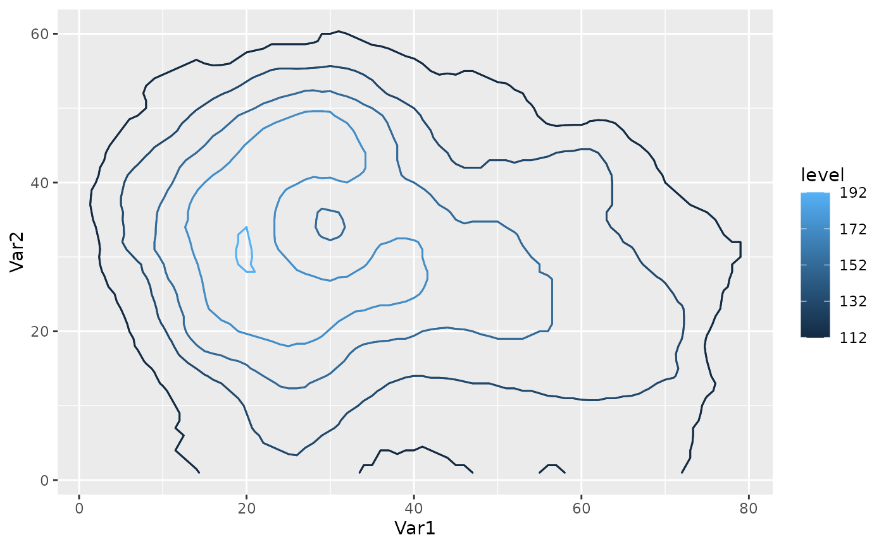
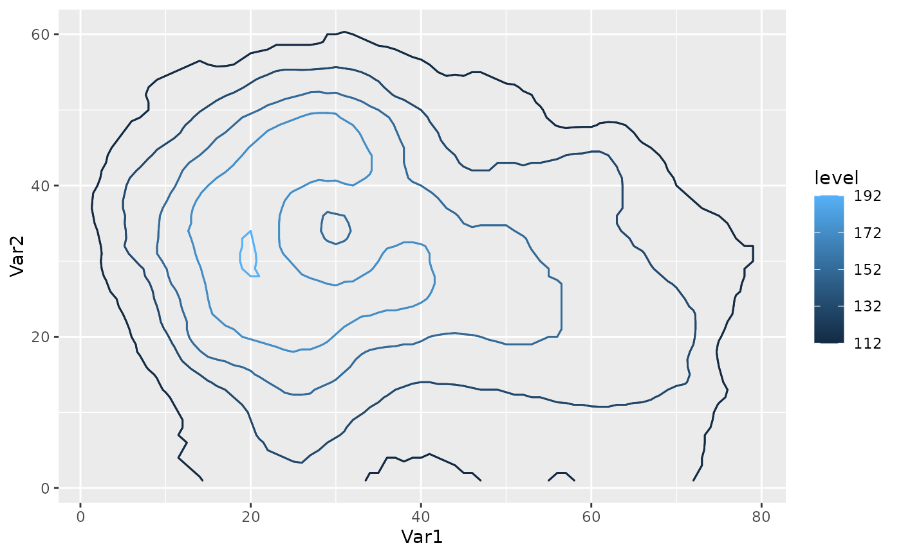

Functions that return functions suitable to use as the breaks argument in
ggplot2's continuous scales and in geom_contour_fill.
Usage
MakeBreaks(binwidth = NULL, bins = 10, exclude = NULL)
AnchorBreaks(anchor = 0, binwidth = NULL, exclude = NULL, bins = 10)Value
A function that takes a range as argument and a binwidth as an optional argument and returns a sequence of equally spaced intervals covering the range.
Details
MakeBreaks is essentially an export of the default way
ggplot2::stat_contour makes breaks.
AnchorBreaks makes breaks starting from an anchor value and covering
the range of the data according to binwidth.
Examples
my_breaks <- MakeBreaks(10)
my_breaks(c(1, 100))
#> [1] 0 10 20 30 40 50 60 70 80 90 100
my_breaks(c(1, 100), 20) # optional new binwidth argument ignored
#> [1] 0 10 20 30 40 50 60 70 80 90 100
MakeBreaks()(c(1, 100), 20) # but is not ignored if initial binwidth is NULL
#> [1] 0 20 40 60 80 100
# One to one mapping between contours and breaks
library(ggplot2)
binwidth <- 20
ggplot(reshape2::melt(volcano), aes(Var1, Var2, z = value)) +
geom_contour(aes(color = after_stat(level)), binwidth = binwidth) +
scale_color_continuous(breaks = MakeBreaks(binwidth))
 #Two ways of getting the same contours. Better use the second one.
ggplot(reshape2::melt(volcano), aes(Var1, Var2, z = value)) +
geom_contour2(aes(color = after_stat(level)), breaks = AnchorBreaks(132),
binwidth = binwidth) +
geom_contour2(aes(color = after_stat(level)), breaks = AnchorBreaks(132, binwidth)) +
scale_color_continuous(breaks = AnchorBreaks(132, binwidth))

#Two ways of getting the same contours. Better use the second one.
ggplot(reshape2::melt(volcano), aes(Var1, Var2, z = value)) +
geom_contour2(aes(color = after_stat(level)), breaks = AnchorBreaks(132),
binwidth = binwidth) +
geom_contour2(aes(color = after_stat(level)), breaks = AnchorBreaks(132, binwidth)) +
scale_color_continuous(breaks = AnchorBreaks(132, binwidth))
